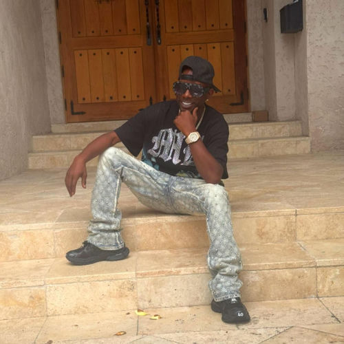

Urban Mystic
Brandon Oneal Williams, better known by his stage name Urban Mystic, is an American recording artist from Fort Lauderdale, Florida, United States. He is best known for his hit singles, "Where Were You" and "I Refuse". Mystic signed a record deal with indie label SoBe Entertainment and released his debut album Ghetto Revelations in 2004.
Complete Discography & Tracklists (25)
2008 Ghetto Revelations II 🎵 0 Tracks
No tracks registered.
2009 Ghetto Revelations 🎵 14 Tracks
2013 Love Intervention 🎵 14 Tracks
2015 Soulful Classics 🎵 14 Tracks
2016 A New Tomorrow 🎵 0 Tracks
No tracks registered.
2023 Feenin' 🎵 0 Tracks
No tracks registered.
2023 Keep It Moving 🎵 0 Tracks
No tracks registered.